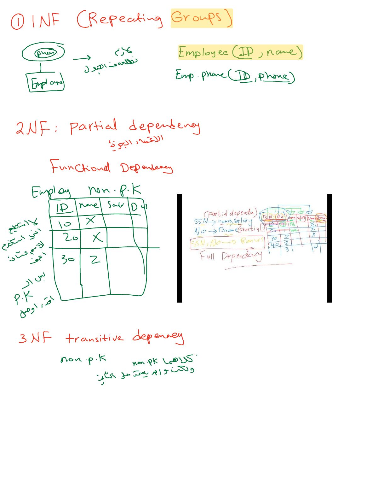
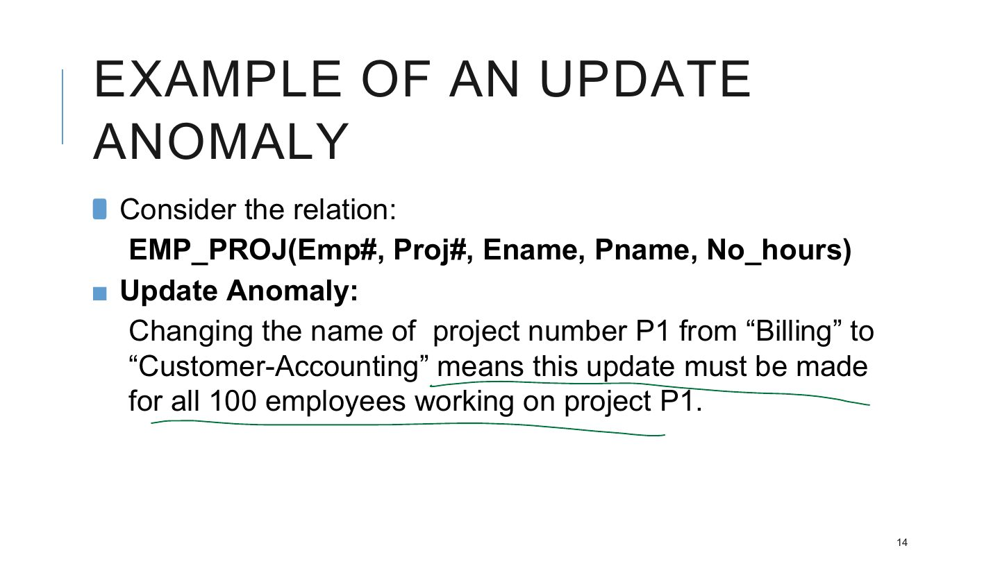
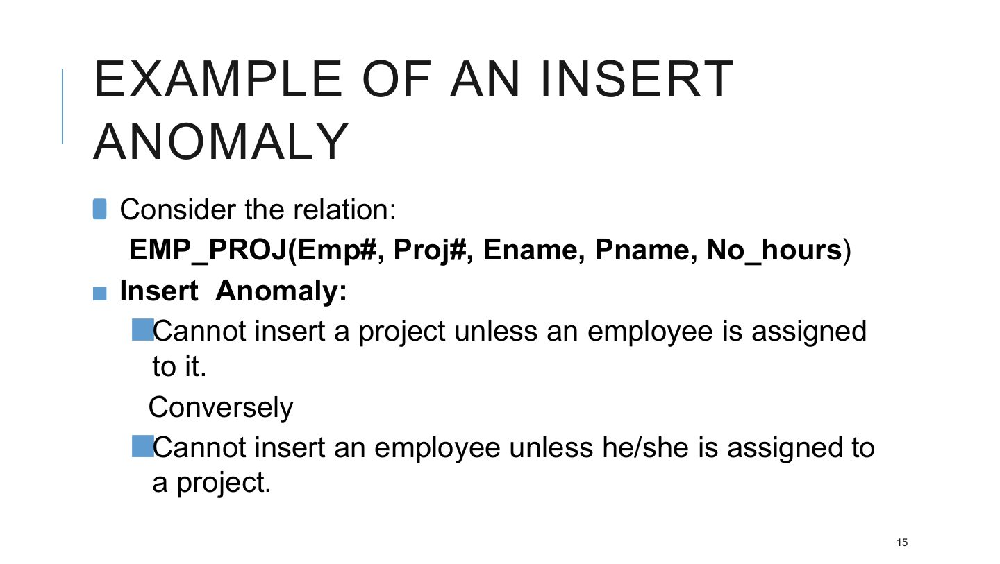
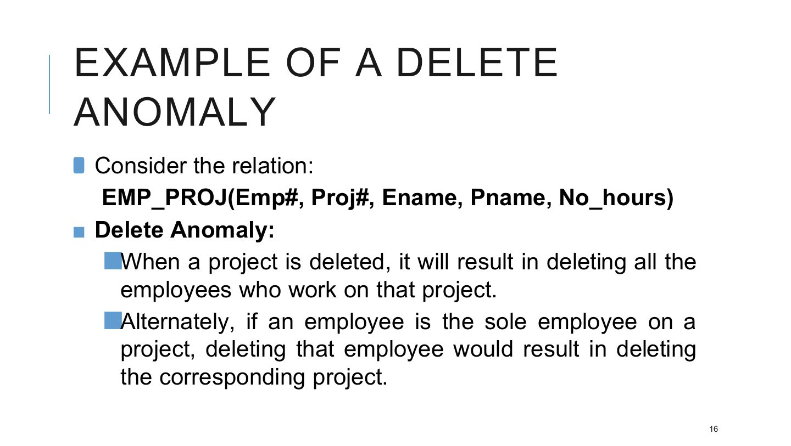
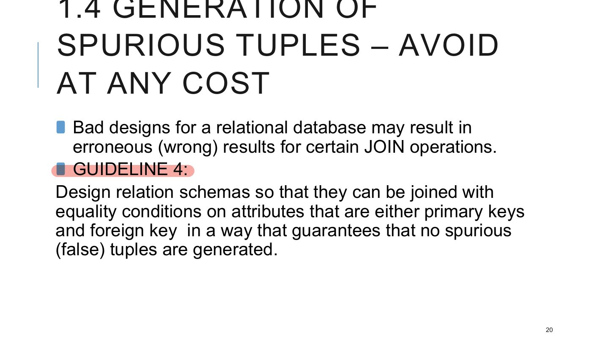
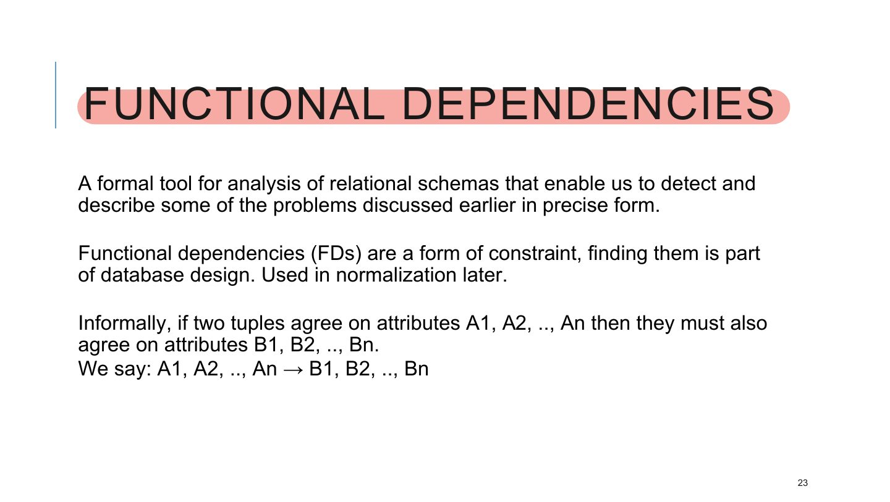
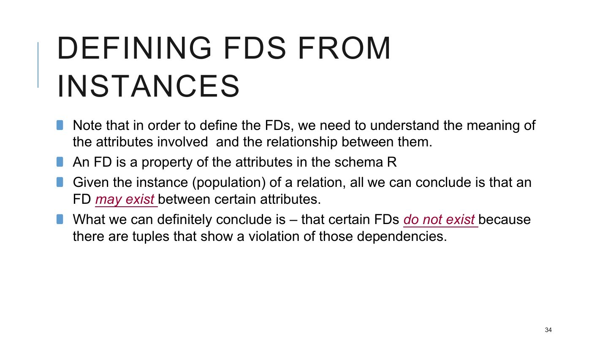
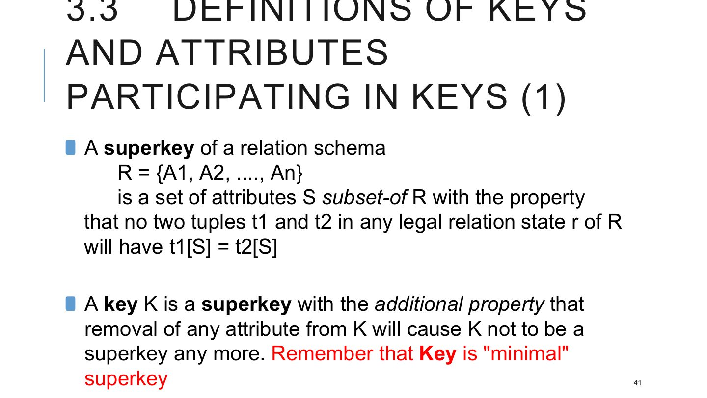
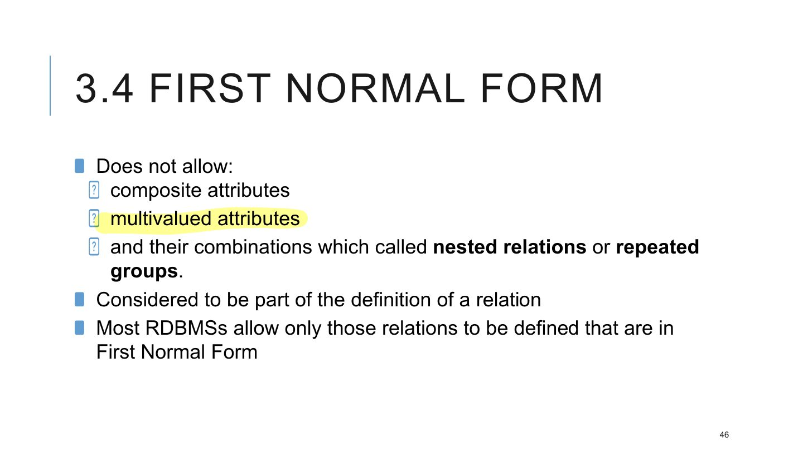
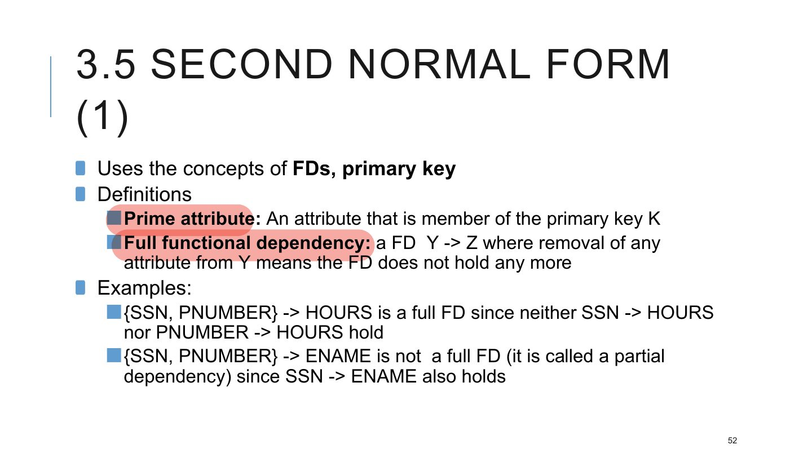

which option shows an insert anomaly
Functional Dependencies and Normalization
Informal design guidelines (clear semantics, no anomalies, few NULLs, no spurious tuples), functional dependencies, keys and prime attributes, 1NF, 2NF, 3NF and BCNF with their general definitions, lossless decomposition, inference rules and attribute closure, and a full worked example.
How to read this page
Every original slide is shown unchanged. Yellow marks on a slide point to a numbered note: hover or tap a mark to jump to its note, and hover a note to see its marks. Questions tagged Past exam appeared on a real paper; Prediction questions are likely angles, not confirmed. Pick an answer to each question: a wrong pick tells you why it is wrong, so you can try again.
All 94 slides
- 1 Functional Dependencies and Normalization
- 2 Slide 2
- 3 LEARNING GOALS
- 4 CHAPTER OUTLINE
- 5 INTRODUCTION
- 6 INTRODUCTION
- 7 INTRODUCTION
- 8 INFORMAL DESIGN GUIDELINES FOR RELATIONAL DATABASES
- 9 GUIDELINE FOR REDUNDANT INFORMATION IN TUPLES AND UPDATE ANOMALIES
- 10 A SIMPLIFIED COMPANY RELATIONAL DATABASE SCHEMA
- 11 A SIMPLIFIED COMPANY RELATIONAL DATABASE INSTANCE
- 12 REDUNDANT INFORMATION IN TUPLES AND UPDATE ANOMALIES
- 13 EXAMPLE: TWO RELATION SCHEMAS SUFFERING FROM UPDATE ANOMALIES
- 14 SAMPLE STATES FOR EMP_DEP T AND
- 15 EXAMPLE OF AN UPDATE ANOMALY
- 16 EXAMPLE OF AN INSERT ANOMALY
- 17 EXAMPLE OF A DELETE ANOMALY
- 18 GUIDELINE FOR REDUNDANT INFORMATION IN TUPLES AND UPDATE ANOMALIES
- 19 1.3 NULL VALUES IN TUPLES
- 20 1.3 NULL VALUES IN TUPLES
- 21 1.4 GENERATION OF SPURIOUS TUPLES AVOID AT ANY COST
- 22 JOINS?
- 23 SUMMARY OF INFORMAL DESIGN GUIDELINES
- 24 FUNCTIONAL DEPENDENCIES
- 25 FUNCTIONAL DEPENDENCIES
- 26 DEFINING FUNCTIONAL DEPENDENCIES
- 27 FUNCTIONAL DEPENDENCIES
- 28 EXAMPLES OF FD CONSTRAINTS
- 29 EXAMPLE BEFORE FORMAL DEFINITIONS
- 30 QUICK EXAMPLE
- 31 DEFINING FUNCTIONAL DEPENDENCIES
- 32 DEFINING FUNCTIONAL DEPENDENCIES
- 33 DEFINING FUNCTIONAL DEPENDENCIES
- 34 SOME FD PROPERTIES
- 35 DEFINING FDS FROM INSTANCES
- 36 ACTIVITY: RULING OUT FDS
- 37 ACTIVITY 2: WHAT FDS MAY EXIST?
- 38 CX
- 39 NORMAL FORMS BASED ON PRIMARY KEYS
- 40 3.1 NORMALIZATION OF RELATIONS
- 41 3.2 PRACTICAL USE OF NORMAL FORMS
- 42 3.3DEFINITIONS OF KEYS AND ATTRIBUTES PARTICIPATING IN KEYS (1)
- 43 Slide 43
- 44 DEFINITIONS OF KEYS AND ATTRIBUTES PARTICIPATING IN KEYS (2)
- 45 TYPES OF FUNCTIONAL DEPENDENCIES
- 46 TYPES OF FUNCTIONAL DEPENDENCIES
- 47 3.4 FIRST NORMAL FORM
- 48 EXAMPLE: NORMALIZATIO N INTO 1NF a
- 49 Slide 49
- 50 NORMALIZATION INTO 1NF
- 51 EXAMPLE: NORMALIZING NESTED RELATIONS INTO 1NF
- 52 NORMALIZATION INTO 1NF
- 53 3.5 SECOND NORMAL FORM (1)
- 54 SECOND NORMAL FORM (2)
- 55 EXAMPLE: NORMALIZING INTO 2NF
- 56 3.6 THIRD NORMAL FORM (1)
- 57 THIRD NORMAL FORM (2)
- 58 EXAMPLE: NORMALIZING INTO 3NF
- 59 NORMAL FORMS DEFINED INFORMALLY
- 60 4 GENERAL NORMAL FORM DEFINITIONS (FOR MULTIPLE KEYS) (1)
- 61 RELATIOAN SCHEMA LOTS
- 62 GENERAL DEFINITIONS OF SECOND AND THIRD NORMAL FORMS
- 63 4.1 GENERAL DEFINITION OF 2NF (FOR MULTIPLE CANDIDATE KEYS)
- 64 NORMALIZATION INTO 2NF
- 65 4.2 GENERAL DEFINITION OF THIRD NORMAL FORM
- 66 4.3 INTERPRETING THE GENERAL DEFINITION OF THIRD NORMAL FORM
- 67 4.3 INTERPRETING THE GENERAL DEFINITION OF THIRD NORMAL FORM (2)
- 68 NORMALIZATIO N INTO 3NF
- 69 BOYCE-CODD NORMAL FORM (BCNF)
- 70 5. BCNF (BOYCE-CODD NORMAL FORM)
- 71 BOYCE-CODD NORMAL FORM (BCNF)
- 72 EXAMPLE: BOYCE-CODD NORMAL FORM
- 73 BOYCE-CODD NORMAL FORM (BCNF)
- 74 BOYCE-CODD NORMAL FORM (BCNF)
- 75 EXAMPLE: A RELATION TEACH THAT IS IN 3NF BUT NOT IN BCNF
- 76 ACHIEVING THE BCNF BY DECOMPOSITION (1)
- 77 ACHIEVING THE BCNF BY DECOMPOSITION (1)
- 78 NON-ADDITIVE JOIN TEST
- 79 GENERAL METHOD FOR BCNF DECOMPOSITION
- 80 BCNF OF TEACH RELATION
- 81 DETERMINING FD S CLOSURE
- 82 FUNCTIONAL DEPENDENCY INFERENCE RULES
- 83 PROOFS
- 84 CLOSURE OF ATTRIBUTES
- 85 CLOSURE ALGORITHM
- 86 FINDING THE KEY
- 87
- 88
- 89 A FULL EXAMPLE
- 90 A FULL EXAMPLE (2)
- 91 A FULL EXAMPLE (3)
- 92 A FULL EXAMPLE (4): KEYS
- 93 A FULL EXAMPLE (5): 1NF AND 2NF
- 94 A FULL EXAMPLE (5): 3NF AND BCNF
Slide 2

Notes
-
1NF: atomic values. 2NF: no PARTIAL dependency on the key. 3NF: no TRANSITIVE dependency. BCNF: every determinant is a superkey.
EXAMPLE OF AN UPDATE ANOMALY

Notes
-
Update anomaly: changing one fact means changing many rows.
EXAMPLE OF AN INSERT ANOMALY

Notes
-
Insert anomaly: can’t add a fact without unrelated data (a new project with no employees).
Exam angle
You can’t record a new department until it has an employee. This is a(n):
EXAMPLE OF A DELETE ANOMALY

Notes
-
Delete anomaly: deleting one fact loses another (last employee of a department deletes the department).
1.4 GENERATION OF SPURIOUS TUPLES AVOID AT ANY COST

Notes
-
Spurious tuples: wrong rows produced by joining a bad decomposition; join on PK–FK pairs to avoid them.
FUNCTIONAL DEPENDENCIES

Exam angle
Ssn → Ename means:
DEFINING FDS FROM INSTANCES

Notes
-
An instance can DISPROVE an FD (two rows agree on X but differ on Y) but can never prove one holds.
Exam angle
A sample table can prove that an FD holds for all possible data.
-
It can only rule FDs out.
3.3DEFINITIONS OF KEYS AND ATTRIBUTES PARTICIPATING IN KEYS (1)

Notes
-
Prime attribute: member of some candidate key. Nonprime: not in any candidate key.
3.4 FIRST NORMAL FORM

Notes
-
1NF: every attribute is atomic (no multivalued or composite values, no nested relations).
Exam angle
Q12: 1NF and its violations
3.5 SECOND NORMAL FORM (1)

Notes
-
2NF: 1NF + every nonprime attribute is FULLY dependent on the primary key (no partial dependency on part of a composite key).
-
Trap A relation with a single-attribute primary key is automatically in 2NF.
Exam angle
Q13: what 2NF eliminates
2NF removes:
3.6 THIRD NORMAL FORM (1)
Notes
-
3NF: 2NF + no nonprime attribute transitively dependent on the key (key → X → Y with X not a key).
Exam angle
Q10, Q14: 3NF
Related question: Q17: normalize LIBRARY to 3NF
EMP_DEPT(Ssn, Ename, Dnumber, Dname) with Ssn → Ename, Dnumber and Dnumber → Dname. Normalize to 3NF.
Compare with the model answer
Dname depends transitively on Ssn through Dnumber. Split into EMP(Ssn, Ename, Dnumber) with Dnumber as an FK, and DEPT(Dnumber, Dname).
BOYCE-CODD NORMAL FORM (BCNF)
Notes
-
BCNF: for every nontrivial FD X → A, X is a superkey. Stricter than 3NF.
-
Tip 1NF: atomic values. 2NF: no PARTIAL dependency on the key. 3NF: no TRANSITIVE dependency. BCNF: every determinant is a superkey.
Exam angle
A relation is in BCNF if for every nontrivial FD X → A:
CLOSURE OF ATTRIBUTES
Exam angle
candidate key of R(A, B, C, D) with A → B → C → D
R(A, B, C, D) with A → B, B → C, C → D. A candidate key is:
-
A⁺ = ABCD.
FINDING THE KEY
Notes
-
Find a key: start with attributes on no right-hand side (they must be in every key), compute the closure, add attributes until it covers R.